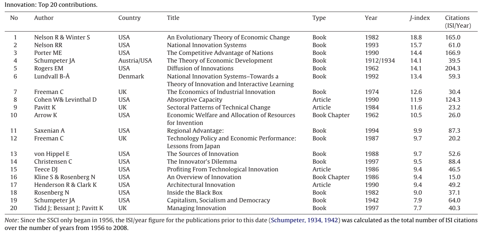
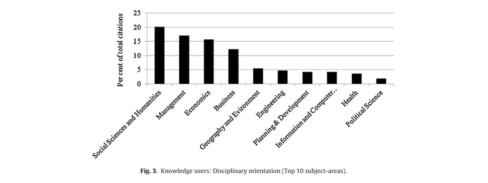
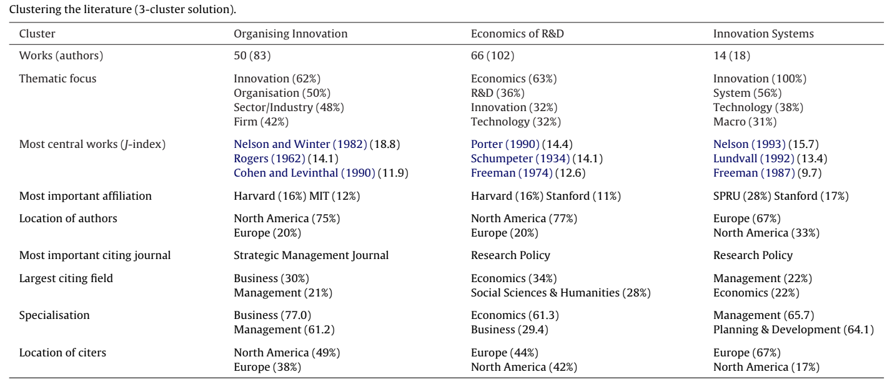

Roadmap for Researchers in Innovation
Newcomers in innovation research like me may feel overwhelmed by the knowledge booming in this field. I have been searching for a roadmap to navigate for a while. Luckily for me, I got one paper that explores the knowledge base of innovation:
Fagerberg, J., Fosaas, M. and Sapprasert, K. (2012). Innovation: Exploring the knowledge base. Research policy, 41(7), 1132-1153. https://doi.org/10.1016/j.respol.2012.03.008
BibTex
@article{fagerberg2012innovation,
title={Innovation: Exploring the knowledge base},
author={Fagerberg, Jan and Fosaas, Morten and Sapprasert, Koson},
journal={Research policy},
volume={41},
number={7},
pages={1132--1153},
year={2012},
publisher={Elsevier}
}
Motivation
Three authors in this paper tried to explore the knowledge base of an emerging discipline, namely "innovations studies", which may be defined as the scholarly study of how innovation takes place and what the important explanatory factors and economic and social consequences are.
Since there are thousands of academics worldwide doing research in innovation, it is important to identify the core contributions to the literature on innovation, as well as the users of this literature, and to analyze the structure of the knowledge base in this area.
Key Ideas
Top 20 contributions
The bibliometrics analysis shows that most of the top contributions are books, which include those well known ones like The Theory of Economic Development by Schumpeter and The Innovator's Dilemma by Christense.

This table is very valuable for me as I could read those classical ideas to understand innovation in a deep way.
Top users
Many scholars are interested in innovation. However, the impact of innovation study is still small outside of the field of business and economics.

Structure of the knowledge base
Based on the characteristics of literature, authors group them into three clusters:
- organizing innovation
- Economics of R&D
- innovation system
Here is the table of core contributions for each cluster.

The evolution of the core literature
Before the 1970s, studies about innovation are not very related as original ideas were developed by big thinkers individually. This state of affairs changed during the 1970s and 1980s. An organization called Science Policy Research Unit (SPRU) led by Chris Freeman began to combine different ideas into a coherent framework in this book The Economics of Industrial Innovation. After 1990, the development of research in this area takes a new twist. While much of the previous work had focused on innovation in firms and industries, some of the attention now shifted towards the role of innovation in the entire economy, and how institutions and policies might be adjusted so that society could enjoy the full benefits of innovation and its diffusion.
What I Have Learned
I got a lot from this reading as it gives a roadmap to do research in this field. It also helps me to narrow down my research area: organizing innovation. This means that I will focus on studying innovation in firms and industries.
This paper can also serve as an example of doing systematic review. In the future, I will definitely turn to it when I want to identify the core literature in my field.
In case, you found this post useful, please cite as:
Cite
Wang, F. (2022). Roadmap for Researchers in Innovation [web blog]. Retrieved June 3, 2022, from https://oceanumeric.github.io/readings/2022/innovation-research-roadmap/.
Created: June 3, 2022